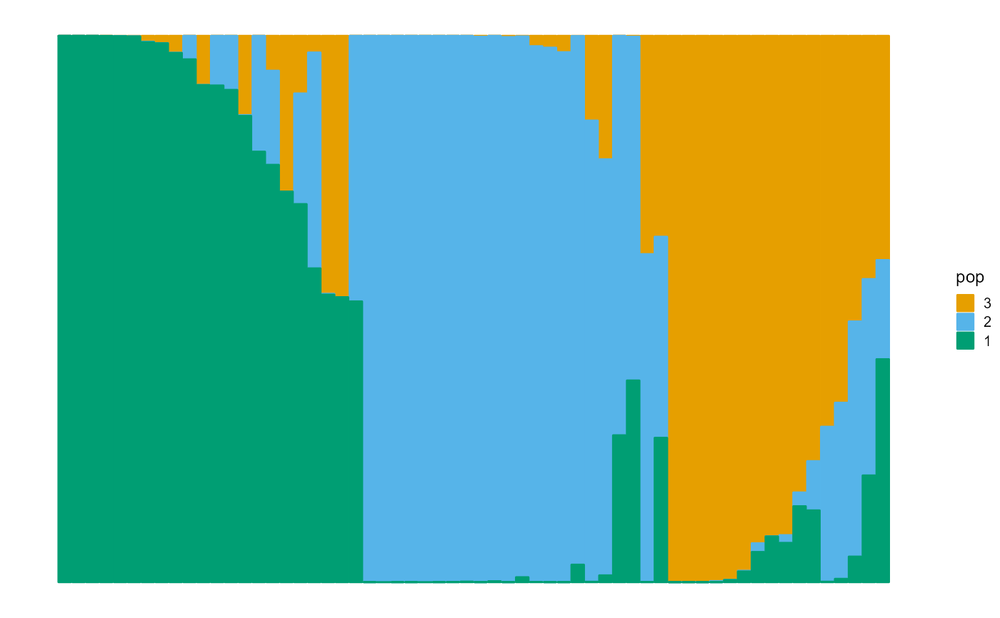

Simulate gene data of PSD model including P, F, G.
psd_simulation(
I,
J,
K,
type.id = c("A", "B"),
parm_alpha = 0.1,
parm_sd = 2,
parm_F = NULL,
data = data_HGDP
)The number of individuals to simulate.
The number of SNPs to simulate.
The number of populations to simulate.
Choose type. Should be one of "A", "B".
A parameter of the normal distribution in the simulation of the first type of P.
A parameter of the normal distribution in the simulation of the second type of P.
A parameter of the beta distribution in the simulation of F. It has the same length as K.
The data needed to be provided in order to collect the suballele frequencies of real SNPs during the simulation of F.
A List with the following parameters:
GThe I x J simulated matrix of counts.
PThe I x K simulated population scale matrix of the individuals.
FThe K x J simulated gene scale matrix of the populations.
data_simuA <- psd_simulation(60, 250, 3, type.id = "A", parm_F = c(0.1, 0.05, 0.01))
plot_structure(data_simuA$P, pops = rep(3:1))

data_simuB <- psd_simulation(100, 500, 5, type.id = "B")
plot_structure(data_simuB$P, pops = rep(5:1))